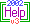

|
General
New
Features
|
Integrated chat |
|
"Who's Playing" |
|
Real-time messaging |
|
Global messaging |
|
NavPoints |
|
Quick-stats |
|
"Backtrack" key |
Updated
Features
|
Interactive
Combat |
|
Cooperative play |
|
Real-time ship movement |
|
Independent Alien,
Ferrengi, and Feds |
|
Turn recovery every
hour |
|
Daily taxation |
|
Real-time stats |
|
"New Mail" notification |
|
Stabilized planet and port updates |
|
Works with DOS & MBBS helpers |
|
|
|
|
|
|
Integrated
Chat
| Talk
to other players through the three globally accessible chat functions or
a fourth available at the Lost Trader's Tavern. Send one-line quick
messages, or enter a line-wrapping multiple line mode (perfect for those
sessions when you'd rather talk than work).
Federation
Comm-Link 
Messages sent over
the Fed Comm-Link will be visible to all players unless they've disable
the channel.
Sub-Space
Radio
Messages are sent
over a specified radio frequency. This is useful for corporate conferences.
Conversations are semi-private, but be wary of channel surfers…
Hailing
Frequencies
Use this feature to
communicate directly to another player on a secured channel. A two-way
comm-link can be established through this function if both players open
the channel.
Tavern
Chat
Engage in conversation
at the Lost Trader's Tavern. A good place for corporate meetings,
but you never know who's lurking in the crowd…
|
"Who's
Playing" List
Display a list of all online players. For example,
| Who's
Playing |
Private John
Captain Gary |
There may be many more players in the game, but these
are the "live" players.
|
Real-time
Messaging
The Trade Wars universe
is more "alive" than ever, as other online players, Feds, Ferrengi, and
Alien Traders carry out their business. With real-time notification,
you'll be aware of all activity within your current sector.
|
Global
Messaging
There's no longer
a need to quit what you're doing to receive or send messages. Notifications
are displayed from most menus and prompts, and the chat functions can be
accessed globally. There are some exceptions. For example,
you won't receive notification of events in your sector when on a port
or a planet (unless you're in a Citadel with a Combat Computer).
|
NavPoints
| Navigation has been
simplified with the addition of the NavPoint menus.
Set
NavPoints
Use
this option to assign a sector to one of four programmable NavPoints.
Move
to NavPoint
This
option displays a list of all player assigned NavPoints, Terra sector,
and StarDock (at SysOp's discretion). NavPoint sectors in FedSpace,
or those containing at least one deployed fighter, are displayed with a
current status report that includes planets and ports. Selecting
one of the listed NavPoints will lay in a course for that destination.
|
Quick-stats
| This
new global was added to put your player stats at your fingertips, wherever
you might need them. Simply type </>
from any prompt for a compact, 3 to 5 line overview of your Trader.
As
an alternative, you can toggle the Computer/Personal Settings/Persistent
Info Display on. This will display the information at the top of
the screen. Typing </>
with this setting active will toggle the display on and off.
|
"Backtrack"
Key
Another
feature to simplify navigation is the "backtrack" key. Use this command
to retreat to the previously occupied sector. When trading adjacent
port-pairs, this command is quite useful.
|
|
|
|
|
|
|
SysOp
New
Features
|
Auto v2
to v3 data conversion |
|
Fossil driver support |
|
Modify real-time move
delays for all player ships |
|
Self-cleaning real-time
message file |
|
Online system status
report |
Updated
Features
|
TEDIT and
EXTERN run concurrently with Trade Wars sessions |
|
Separate message and
mail files |
|
Alien, Ferrengi, and
Fed processing distributed |
|
Some player activities limited to once daily |
|
Improved TEDIT prompting |
|
Various code optimizations |
|
|